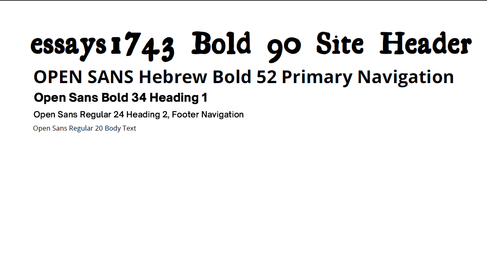

Site Name
The Well-Conceived 180
Site Purpose
The decision to start a family is possibly the most consequential choice we can make in life. But what happens when you want a baby, you’ve prepared and anticipated and maybe even NAMED that baby, but all attempts are in vain? Navigating this trail called infertility can be a source of despair and euphoria, inadequacy and gratitude, isolation and camaraderie. The Well-Conceived 180 is a place where creativity meets pro-creativity, where we conquer ALI (adoption, loss, infertility) challenge.
Target Audience
The target audience is anyone who has struggled (past or present) with issues associated with adoption, loss, and/or infertility. There is a strong emphasis on narrative life-coaching, which is a technique for reframing the perceived negative life events in a way that is empowering and supportive.
- What are all these acronyms?
- What treatments are available for infertile couples?
- Should I do IVF?
- What should I know before I adopt?
- Should we become foster parents?
- How can my partner and I support each other?
- The grief cycle
- What is narrative life-coaching?
- How can a creative practice support my healing?
- What if I never have children?
Logo

Color Scheme
Typography
